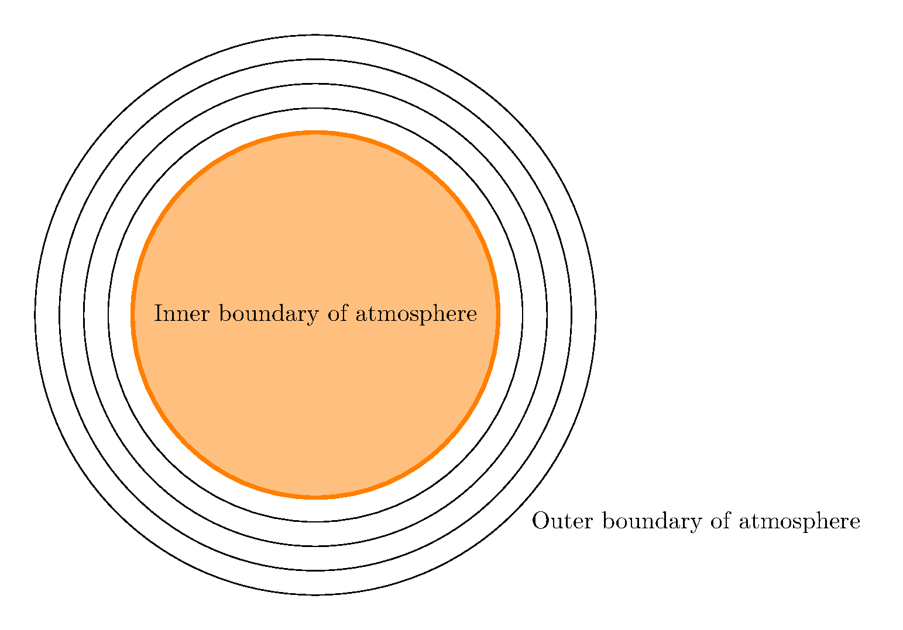
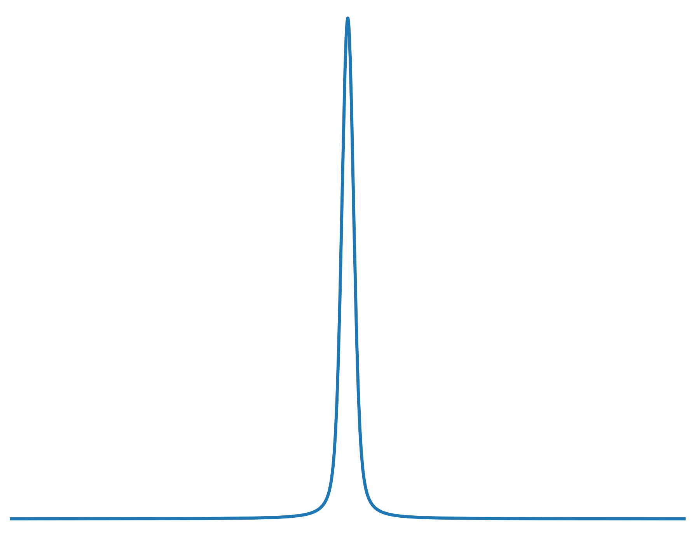
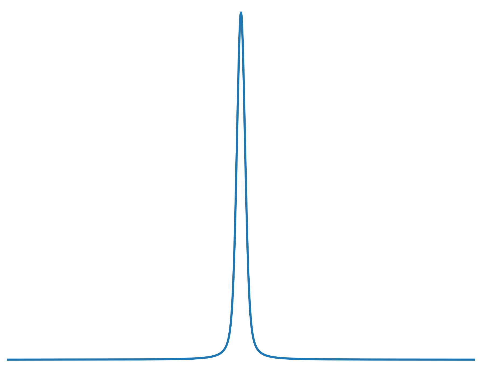

Physics of STARDIS
Model and Plasma
STARDIS breaks down the stellar atmosphere into spherical shells as shown below and approximates that the plasma state is uniform throughout each shell. We rely on the MARCS code, a code that generates models of stellar atmospheres, to determine the temperatures, elemental abundances, and densities in each shell. The existing TARDIS plasma infrastructure determines the rest of the plasma state, namely the excitation and ionization properties and transition rates.
{kind=link}
Opacities
To determine an output spectrum, we need to understand how photons of light move through the atmosphere and what interactions they experience. Opacity is a measure of how likely it is that light will be scattered or absorbed by some material, like the stellar plasma, per unit distance it travels. This is contributed to by several mechanisms, which are described below.
Opacity Sources
The first four of these interactions are called continuum interactions, as they affect light at a large range of frequencies. Line interactions, on the other hand, only occur with light around specific frequencies, corresponding to the electron’s jump in energy. These are called resonant frequencies.
Bound-Free Absorbtion
{kind=link}
Free-Free Absorbtion
{kind=link}
Rayleigh Scattering
{kind=link}
Electron Scattering
{kind=link}
Line Interaction
{kind=link}
Broadening
Line interaction opacity does not occur only at the exact resonant frequencies; lines are broadened to reach other nearby frequencies. Thus, the line interaction opacity is the total line opacity
times the line profile \(\phi(v)\) which describes the broadening.
 vs. 
vs. 
{kind=link}
Above are examples of line profiles, the left being very broadened and the right being less broadened.
The line profile uses the following parameters for determining how much the line is broadened:
The Einstein coefficient \(A_{ul}\), describing the line’s natural acceptance of non-resonant frequencies.
The doppler width \(\Delta v_D\), the range of frequencies that are doppler shifted to be the resonant frequency due to the movement of ions in the plasma.
The collisional broadening parameter \(\gamma_{\text{col}}\), describing the effects of forces between ions or ions and electrons which shift the resonant frequency.
The line profile centered at the resonant frequency \(v_{lu}\) is then:
Transport
Finally, we use the opacity information to trace beams of light coming from the photosphere at different angles and frequencies to find the final intensity. We use the equation
where \(\tau = \frac{\alpha l}{\cos \theta}\) is the optical depth, \(l\) is the depth of each shell, and \(B(v)\) is the blackbody distribution.

The flux density (the desired spectrum) is then: